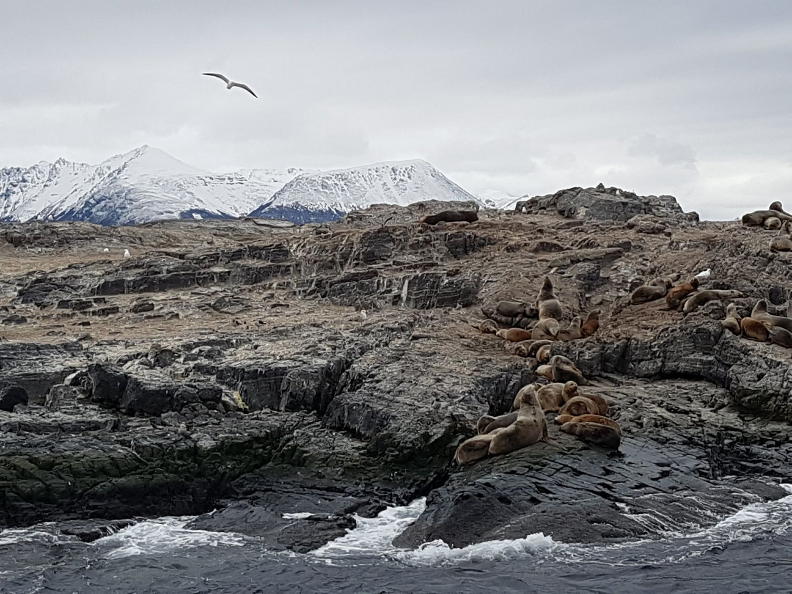
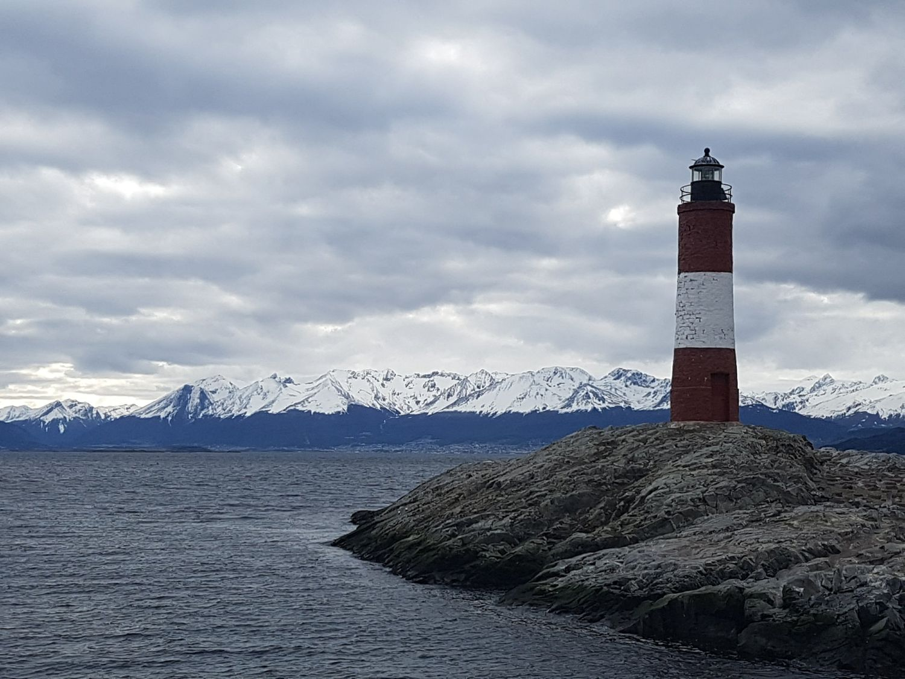

Argentina · Ushuaia · Tierra del Fuego
Ushuaia in 2026: the national park, Laguna Esmeralda and the Beagle Channel, and what to check before you go
I spent five days in Ushuaia, at the bottom of Argentina on the island of Tierra del Fuego, from October 18 to 22, 2017. That was nine years ago, so this is partly what I remember and photographed, and partly what I checked again in November 2026. Most of what I did was outdoors: a national park, a lagoon under a glacier, and a boat trip on the Beagle Channel.
What I did
October 19, the national park. Tierra del Fuego National Park is west of town, and my photos from there show a grey bay with the Beagle Channel, a marsh with dead trees and the visitor centre sign. I do not remember how we got there.
October 20, Laguna Esmeralda. In the morning we walked to the lagoon, a dark green lake in a valley with snow on both sides and a glacier at the far end. There was snow on the ground in October.

October 20, the Beagle Channel. That afternoon I took a boat trip. I do not remember the company, the price or how I booked it. We passed a rock covered with cormorants, a rock with sea lions, and a red and white lighthouse.


What to check before you go (November 2026)
- The national park ticket. The national parks tariff table, valid from June 1, 2026, lists a daily pass for Tierra del Fuego at ARS 40,000 in the "General" category and ARS 18,000 for Argentine residents (Argentina.gob.ar, and the same figures in Infoviajera, May 20, 2026). The table does not say that "General" means foreign visitors, so I cannot give you the exact foreign rate. Infobae reports a 50% discount for a second day within 72 hours, which can only be bought online (Infobae, May 15, 2026).
- Laguna Esmeralda. A 9 km round trip, about 4 to 5 hours, and about 20 minutes from town on Route 3. The best season is October to March, and snow and ice can stay into October. The author recommends a guided trip in winter and warns that there is no phone signal at the trailhead. The article does not mention an entrance fee, so ask locally (Sol Salute, March 9, 2026).
- Boat trips on the Beagle Channel. One Expedia listing, with no date on the page, shows a four-hour trip at US$142 per adult, with departures at 9:00 and 14:00 marked as pending confirmation. Its route lists the Les Éclaireurs lighthouse, Isla de los Lobos for sea lions and Isla de los Pájaros for cormorants (Expedia). It is a reseller, so compare the price and the times with the operators before you book. The lighthouse is a brick tower 11 metres tall on an islet about 5 nautical miles east of Ushuaia, in service since December 23, 1920 (Wikipedia).
- The post office at the end of the world. A small tin house inside the park, in Ensenada Bay, described as the southernmost post office in South America. Atlas Obscura advises you to bring the exact address and postal code for your postcard (Atlas Obscura, undated). I cannot tell you if it is open today.
- Getting here. On my way I almost missed the flight to Ushuaia, because Buenos Aires has two airports, Ezeiza and Aeroparque, about 32 km apart, and I did not know it. A private transfer takes 40 to 60 minutes in normal traffic, and public transport over two hours (Canal 26, March 1, 2026). Check which airport each of your flights uses.
What I could not check
I did not find an official statement of the foreign rate for the park, a dated price for a boat trip, or an entrance fee for Laguna Esmeralda. I also do not know what I paid for the boat or the hostel in 2017.
Is it worth it?
Yes. Ushuaia is a place to be outdoors: the park, the lagoon and the channel were my best days of that part of the trip, and I spent them with a group of travellers I met there. Go in the season that suits you, check the park ticket and the boat price in advance, and take warm clothes, because snow was still on the ground in October.
The full chapter, with all my photos from the five days, is in Members.